Products / Dairy tubes & fittings
316L food and dairy-grade tubing and fittings.
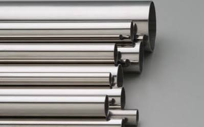

Dairy and sanitary tube systems are built for hygienic transfer of milk, food products, beverages and pharmaceutical liquids, where surface finish and cleanability matter as much as strength. Manufactured from 316L stainless steel, our dairy tube and fittings resist product build-up, are easy to clean-in-place (CIP), and hold up to repeated sterilisation cycles.
Dairy tube is dimensioned to SMS 3008 or DIN 11850/11866 outside-diameter series, distinct from ordinary process pipe schedules, so that it mates correctly with standard tri-clamp ferrules, gaskets and sanitary valves used across the dairy and food industry.
Both tube and fittings are supplied with a dairy-polished internal bore — free of pits, crevices and weld-seam irregularities that could otherwise harbour bacteria — with electropolished finishes available on request for higher-hygiene applications.
Welded 316L tube supplied to SMS or DIN outside-diameter series, in polished lengths suitable for straight runs between process equipment. Sized 3/4" to 4", with wall thickness matched to the selected standard so it seats correctly on standard ferrules and clamps.
Spec: SMS 3008 · DIN 11850 (Series 1/2/3) · DIN 11866Tri-clamp (ferrule) fittings — elbows, tees, reducers, caps and clamp unions — machined and polished to the same hygienic standard as the tube they connect to. Quick-release clamp joints allow lines to be broken down fast for inspection and CIP cleaning without tools.
Spec: DIN 32676 · ISO 2852 tri-clamp ferrules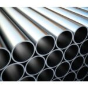
Dairy Tube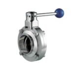
Butterfly Valve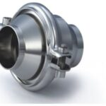
Check Valve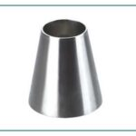
Concentric Reducer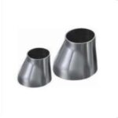
Eccentric Reducer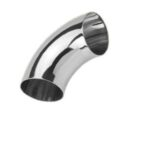
Elbow 90° & 45°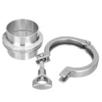
Ferrule Clamp Set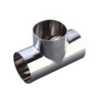
Tee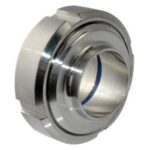
Union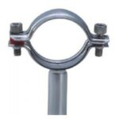
Pipe Holder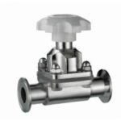
Diaphragm Valve316L stainless steel throughout, chosen specifically for direct food, dairy and pharmaceutical contact.
Holds up against milk acids, cleaning chemicals and repeated CIP cycles without pitting or staining.
Crevice-free joints and smooth internal bores keep product residue from building up between runs.
Dairy-polished finish as standard, with electropolishing available where a higher-hygiene finish is needed.
Tri-clamp ferrule joints let lines be broken down fast for inspection or cleaning, no tools required.
Stocked across the SMS/DIN size range, with custom lengths, thicknesses and fittings available to order.
The range of 316L dairy tube and fittings stocked by Murtaza Corporation includes products for: